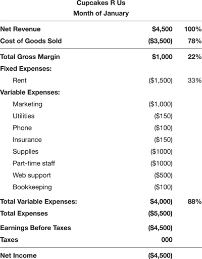
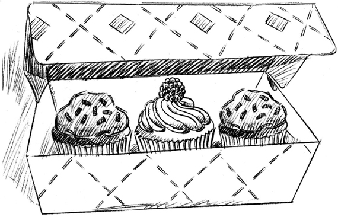
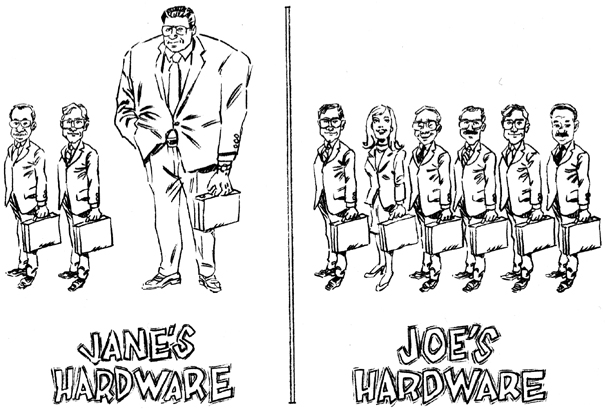
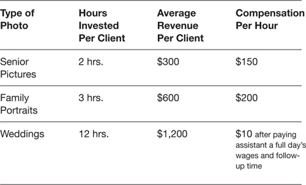
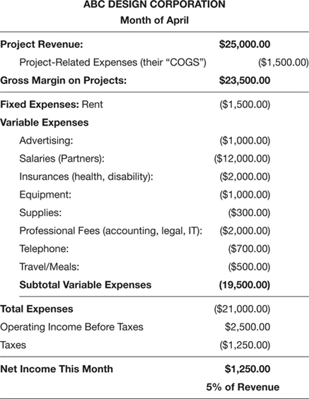
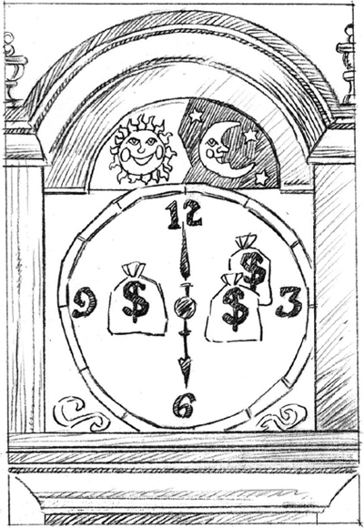

CHAPTER 3
Using Your Net Income Statement to Improve Profits
Driving with Your Eyes Open
Now that you understand what we learn from the monthly Net Income Statement—is the business making a profit or showing a loss—you have a framework for making decisions. The challenge is to use this information to manage your business so that you are maximizing profits while keeping a tight rein on costs.
Achieving greater profitability does not mean taking advantage of unsuspecting customers. It means delivering value to customers while being wise about how you invest your time, energy, and scarce resources (like cash) so you get the best return on investment. If a business is not delivering value for what it’s charging, customers simply will not buy from the company. If a business delivers great products or services but can’t stay profitable, however, it will only be a matter of time before the world no longer has access to those marvelous products and services. Profits are the evidence that customers like a business’s products or services enough to spend hard-earned cash for them, and that management is doing a superb job of keeping expenses in line with revenue. Profits are one of the healthy vital signs of a sustainable, well-managed business.
DRIVING PROFITS FOR PRODUCT BUSINESSES
Let’s climb back in our business management simulator and practice using our Net Income Statement to manage a business toward profitability. We’ll start with one from a business that sells a tangible product: cupcakes. Is Cupcakes R Us making a profit? Take a look at the Net Income Statement shown in Figure 3–1 and decide for yourself. (Remember: a number in parentheses is a negative number.)
What’s your verdict? If you said the business is losing money—$4,500 a month, to be exact—you’d be correct. Clearly, something has to change if Cupcakes R Us is to stay in business. Let’s do the diagnostics on this Net Income Statement to see why they’re losing money. The first thing I zero in on is to see if gross margin meets our 30 percent of net revenue hurdle rate. If it doesn’t, we need to find ways to increase it if we want to stay in business.
How to Increase Gross Margin
The challenge for Cupcakes R Us is that the gross margin is too low to be able to pay all the expenses to operate the business. The only way to turn this negative net income into a positive net income is to find ways to increase gross margin. Here are some ways to accomplish that.

FIGURE 3–1
Lower Cost of Goods Sold
The first benchmark we need to check is gross margin. If you remember our mantra from the previous chapter, gross margin needs to be at least 30 percent of net revenue if a business is going to be profitable. Here, it is clocking in at 22 percent. And in order for gross margin to be at 30 percent or higher, COGS needs to be 70 percent or lower. As you can see, COGS is 78 percent of Cupcakes R Us’s revenue. That means that for every dollar Cupcakes R Us makes in sales, $0.78 goes to pay for raw materials and labor to make the cupcakes. This is their unit cost. This number needs to get down to or under $0.70 to put gross margin in the safe zone. There are various strategies for achieving this, and the first one to investigate is whether Cupcakes R Us can lower its direct costs.
As I said in Chapter 2, very few small business managers know their fully loaded direct costs for labor and materials, and this ignorance is not bliss—it is driving blindfolded. To manage Cupcakes R Us, we need to know exactly what it costs in time and labor to measure, mix, and bake a batch of delicious cupcakes. We also need to know the cost of direct materials like the silky Belgian Chocolate, butter, flour, and sugar required to create these divine temptations. Finally, we need to know how these costs break down for each product on a per unit basis. Once we know the direct costs per unit, we need to look at our retail prices and make sure that they are marked up from that cost by about 45 percent. That will ensure that every product is helping us achieve a 30 percent gross margin. Remember, every product in the lineup needs to be making a 30 percent gross margin or it will degrade the overall gross margin.
Let’s look at how direct costs break down for Cupcakes R Us. The bakery sells two kinds of cupcakes, chocolate and raspberry. As it happens, the raspberry cupcakes are more expensive to make than the chocolate cupcakes, and that cost rises in months (like January) when raspberries are not in season. So for January, our COGS breakdown per unit is as follows:
• Chocolate: $1.40 per unit
• Raspberry: $2.10 per unit
Now let’s check these COGS against our retail prices. In January, chocolate cupcakes were priced at $2.00 each, and raspberry cupcakes were $2.50 each. We have to determine the gross margin (unit price minus unit cost) per unit, and then divide that gross margin by unit price to determine its percent of net revenue. For Cupcakes R Us, we’re looking at the following numbers:
For chocolate:
$2.00 (retail unit price) – $1.40 (COGS)
= $0.60 (gross margin)
$0.60 divided by $2.00 equals 30% (whew!)
For raspberry:
$2.50 (retail unit price) – $2.10 (COGS)
= $0.40 (gross gargin)
$0.40 divided by $2.50 equals 16% (uh-oh!)
As you can see, gross margin on the chocolate cupcakes is just fine, but gross margin on the raspberry cupcakes is barely half of what it should be. Aha! Now we know exactly what is pulling the overall gross margin down to 22 percent of total net revenue.
The obvious next step is to see if we can fix the COGS on our raspberry cupcakes. First, it’s nice to know the maximum COGS the business can afford. We know it needs to be no more than 70 percent of the retail price in order to get a 30 percent gross margin. So, if we keep our retail price of $2.50 per raspberry cupcake, then we need to bring maximum COGS down from $2.10 per unit to $1.75 per unit (2.50 times 0.70 equals 1.75). In other words, we need to see if we can produce and deliver each raspberry cupcake for about $0.35 less than we are currently paying. What can we do?
One solution is to offer raspberry cupcakes only at certain times during the year, when the raw ingredients are cheapest. In addition to lowering COGS, this creates a sense of urgency for customers to buy while they’re still available. Other possible steps we can take include:
• Negotiating with suppliers for volume discounts.
• Re-engineering the product using different ingredients, construction, or materials.
• Finding low-cost collaboration. For example, if you are cooking out of your kitchen but need to expand, rent ovens or kitchens at commercial facilities instead of leasing an actual bakeshop.
• Finding new sources for raw materials.
Raise Prices
If we can’t get our COGS down to 70 percent with these strategies, then we need to look at how feasible it is to raise our retail prices. Say that we can’t lower the COGS on the raspberry cupcakes at all. How much would we need to raise the price to get a 30 percent gross margin? As I mentioned above, a general rule of thumb is to set the retail price by marking up our COGS by 45 percent.
We start by calculating the markup (we called it “the premium” in Chapter 2) and adding it to the unit cost.
2.10 times 0.45 equals 0.94.
$2.10 + 0.95 (we rounded up)
= $3.05 (new retail price per unit)
That new retail price is going to put our gross margin in a much healthier place. Price minus cost equals gross margin (GM), so:
$3.05 (new retail unit price) – $2.10 (COGS)
= $0.95 (GM)
$0.95 divided by $3.05 equals 31%
(and the Net Income Statement is healthy again!)
Alternatively, we can shoot for an exact 30 percent gross margin by establishing our current COGS as 70 percent (0.7) of the retail price (X). Here’s how you figure that out:
$2.10 (COGS) ÷ 0.7 of retail price X, that is, COGS = 0.7X
$2.10 divided by 0.70 (70%) equals $3.00
(7 goes into 21 three times)
And voila! Our new retail price per unit is $3.00.
As you can see, if we can’t lower our COGS, then we need to raise the price of the raspberry cupcakes by at least $0.50 per unit to get them generating a 30 percent gross margin. But will our customers spring for the extra fifty cents a cupcake?
Now, what if we are able to lower the unit COGS on our raspberry cupcakes some, but not enough to get them to 70 percent of retail price? Let’s say that after negotiating with a new raspberry supplier, we shave $0.15 of direct costs off each of our cupcakes, bringing our COGS from $2.10 down to $1.95. Now we still need to raise our prices to reach a 30 percent gross margin, but we won’t have to raise them as much. Using the COGS method, if we mark up $1.95 by 45 percent (1.95 times 1.45), we get a unit price of $2.83 (rounding up). Using the net revenue method—setting our unit cost of $1.95 as 70 percent of the retail price—we end up charging $2.79 per unit. With our new unit cost, we can sell the raspberry cupcake at between $2.79 and $2.82 apiece and make an adequate gross margin (that is, stay in business). As you can see, lowering costs and raising prices are strategies that work in tandem to reach your COGS and gross margin benchmarks.
Bundle Products
Another option is to bundle the low gross margin product with higher gross margin products in a minimum order. That way, customers need to buy several products in the line. In the Cupcake R Us case, this means that if customers want raspberry cupcakes, we set it up so that they need to buy chocolate cupcakes too—as long as our COGS and prices are set so that the average gross margin on this bundle is 30 percent. Bundling products can prevent clients from “cherry picking,” or only buying the lowest margin products, which can be the fast lane to low or negative profits.

Sell Volume, Not Just One-sies and Two-sies
Volume sales can be helpful because it’s often possible to negotiate volume discounts on raw ingredients, driving down COGS in the process. Instead of selling one cupcake for $3.00, a single very large sale could be worth a hundred times that in revenue, with lower costs per unit. Unit prices will come down as well in this case, but it still may be easier to keep gross margin above 30 percent. Just make sure this is the case before investing in marketing to increase unit sales. For Cupcakes R Us, we would need to research our market and discover ways to sell large orders of cupcakes to customers. What target audiences, times of the year, or times in a customer’s life can we identify when customers are looking for volume? Parties? Weddings? Baby showers? Birthday parties? End of the year? New Year’s celebrations? One high-volume order can be worth hundreds of dollars in sales revenue.
Drop the Low-Margin Raspberry Cupcake
Our last option to protect net income is to drop our low gross margin products from the line altogether. Sometimes dropping products that have a very low gross margin is a great way to send unprofitable customers to your competition. Ask customers their opinions. Will they pay more for a raspberry cupcake? Can you reduce the size of the raspberry cupcake for the same price? Let the customer help you make these kinds of decisions.
Eight Guidelines for Raising Prices While Preserving Sales
There are few variables on the Net Income Statement that will affect profits as much as pricing, because price drives revenue. Higher prices equals higher revenue—as long as we don’t lose sales in the process. But raising prices equals raising heart rates for many small business owners. They think that if they raise prices customers will stop buying and run for the hills. But this is not necessarily true. Maintaining sales while raising prices is totally possible, as long as you are attentive to certain guidelines. The following are eight guidelines for raising prices in ways that will be accepted, rather than resisted, by customers.
Guideline #1: Check Out What Competitors Are Charging
Whenever I launch a new business, I become a mystery shopper and shop my competitors. I look at what the competition is charging for what they’re delivering. Are they using better-quality ingredients or materials in their products? Do they have the same variety I do? Is their customer service fantastic or awful? Can I speak to a live human if I have a question? What’s the total customer experience like? How are their customer reviews online? After I collect my data, I decide if their pricing is worth it.
I recommend that you check out at least five competitors in your market niche in order to judge if your prices are right. Incidentally, I’ve found that most small businesses tend to underprice rather than overprice their products.
And here’s something you should remember about underpricing. It may seem counterintuitive, but one of the signs that a business’s prices are too low is that its sales closure rate is too high. For example, a friend who owns an advertising company told me that his sales closure rate was 80 percent—eight out of ten people he presented to hired his firm. He was stunned when I told him that was a terrible closure rate. Why? He was closing all that business because his prices were too low. In that business, he’ll know his pricing is competitive if he has a 25 percent closure rate. His pricing scheme meant he was serving too many clients at too low a gross margin. It was no wonder he could barely pay the operating expenses to run his company.
Guideline #2: How To Raise Prices and Remain Competitive
Say that we do some mystery shopping for Cupcakes R Us and discover that the cupcake competition is charging $3.75 for a raspberry cupcake that uses fillers, instead of the fresh berries that we use. Here we’ve been considering raising our prices to around $3.00, hoping that customers will buy them, and we find out that they’re already buying an inferior product for far more. This tells us that we might be able raise our prices to $3.25 per cupcake or more and still be competitive enough to maintain our sales. If successful, our raspberry cupcakes would be delivering more than 30 percent in gross margin, which is our minimum goal. Granted, a $0.75 jump in price may not be easy to pull off, but if our competition is already a lot more expensive, customers could be willing to compensate the business by paying more for a great product.
Guideline #3: Don’t Raise Prices Across the Board
Raise prices on a select group of products—especially high-volume products with high perceived value, such as difficult-to-get or unique products. Customers will accept the new prices more readily. Keep other prices the same, at least for the short term. Give customers a chance to digest the price increase and give them an opportunity to get a break if they buy volume. Provide an incentive to continue to purchase from you instead of the competition.
Guideline #4: Raise Prices Incrementally and Not All at Once
Netflix was infamous for raising prices 60 percent in one shot. Customers were not happy and abandoned Netflix in droves. In general, a 10 to 12 percent increase won’t raise the ire of most customers. Just make sure the business is not losing money on the most popular items. If the average of product prices can still deliver at least 30 percent gross margin, be satisfied.
Guideline #5: Give Customers Some Forewarning of Price Changes
Letting customers know about a price increase in advance allows them to prepare for it. Yes, this gives clients more time to shop the competition, so you need to know what the competition is charging before raising prices. It might also spike purchases now while prices are a bit lower. If you have particularly large and valued customers, take the time to call or meet with them before the formal correspondence about price changes goes out (and you may need to compromise a bit with the behemoths). Personal contact takes time, but it will earn the business a lot of credibility. It eases the pain of the message and helps protect core business relationships. It also treats customers like collaborators, not ATM machines. The golden rule applies to raising prices: Treat others as you’d like to be treated.
Guideline #6: When Publishing New Prices, Accuracy Matters
A valve company once sent all its customers a new price list in December. There was one big problem; the prices were incorrect. The actual prices were higher than the new price list indicated. Ouch. Check and double-check before the correspondence goes out.
Guideline #7: Timing Is Everything
The end of the year is usually a good time to announce a price increase for the New Year. Most business owners and individuals are accustomed to receiving news of price increases at this time. Insurance, health care, and utility companies often announce price increases at the end of the year. Give customers at least 30 days’ notice before new prices tick up. Put up a clear and professional-looking sign in your retail premises. And if you sell to businesses and not just consumers, you should give them at least three months so they can factor the price increases into their next fiscal year budgets.
Guideline #8: Reinforce the Value Your Company Is Providing
It’s not what clients pay for the product or service, it’s what the business delivers that matters. Product prices and the way they’re communicated should remind customers of how much those products or services contribute to their success. Price up, deliver professionally, and you’ll be amazed at how a quality-conscious audience will be attracted to that offering.
Diversify Your Client Base
There’s a bit more to be said about managing customers and understanding their impact on gross margin. In the same way that not every product contributes the same to your gross margin, not every customer does either. Every small business manager needs to look carefully at who is buying from the business, what specific products (or services) they’re buying, and how much they’re buying in relation to total revenue. This helps to identify which customers have the most power to influence your revenues, and ultimately your profits.

Every customer or client is like a company in an investment portfolio. A healthy investment portfolio is designed so that one investment cannot jeopardize the return for the whole portfolio. Likewise, small business managers must learn to manage their clients so no one client can put a significant percentage of the company’s revenue at risk.
I’ve used this kind of thinking in the real world and been amazed at how it’s helped the businesses I’ve consulted with establish much more predictable revenue. I’ve also rarely seen this strategy emphasized in accounting texts. It’s unbelievably powerful if you can implement it. A lot of smaller clients are a really good thing. It diversifies your revenue risk. Smaller clients can’t demand big discounts. Your gross margin should be higher with smaller clients. So don’t look down your nose at smaller clients—they pay the bills and keep the business afloat.
Incidentally, a diverse client base will make a business more attractive to investors, because they’ll see that the business has manageable risk. For example, say you’re an investor deciding to invest in one of two companies, Jane’s Hardware or Joe’s Hardware. Both companies sell very similar product lines, and both have 100 customers who buy from them regularly. However, the amount each customer buys varies dramatically between the two businesses:
| Jane’s Hardware | Joe’s Hardware |
| Customer A = 90% of total revenue | Customer A = 10% of total revenue |
| Remaining customers = 10% total revenue | Remaining customers = 90% total revenue |
What’s the problem? Jane has one 900-pound gorilla customer. Every $9 out of $10 Jane’s business generates in revenue comes from that one customer. That’s great—as long as the customer continues to buy from her. What happens if that customer leaves? Jane’s Hardware falls on hard times because she can’t replace 90 percent of her revenue overnight. In fact, Jane will probably need to find many other clients to make up for the shortfall after that one big client leaves. Beating the bushes to find a lot of new revenue takes real time and effort. Additionally, Jane is probably carrying all kinds of operating costs to service Customer A, some of which are fixed expenses. When Customer A leaves, Jane is stuck with bills that keep piling up, while revenue has crashed faster than the NASDAQ market index.
Joe, on the other hand, has one customer who generates 10 percent of total revenue, and no other customers individually contributing more than 10 percent of the total revenue. He has a diversified client base. If a customer leaves Joe, his revenue will decrease, but his business won’t be on life support the same way Jane’s would be. He will still be able pay the bills with the revenue and gross margin generated from his remaining client base. He can recover faster. Losing one client won’t sink net income into negative territory for Joe’s Hardware. That’s the beauty of diversifying your client base.
It’s so important to realize that a large customer is not always profitable. In fact, large customers can sometimes be very costly. Anyone who has ever done business with a city, state, or local authority knows this. The customer has negotiating leverage on price, so they expect big discounts; they take a long time to pay; and they expect management to be more available than an obstetrician. The large client might also require a company to set up unique systems and processes to parallel their specifications in order to communicate to their organization. This could mean higher fixed overhead costs for the business.
If a high-maintenance customer insists on only buying the lowest margin products in the line, you need to have a meeting with the client to negotiate minimum orders and pricing. If that doesn’t go well, maybe it’s time to fire the client (nicely, of course) and send their low-margin business to the competition. It’s always an option.
Don’t Get Creamed
Here’s another true story that will drive the client diversification point home. Imagine you manage a company that develops fantastic skin creams to stop the aging process—a veritable fountain of youth. A very large, upscale hotel chain catches wind of this product and places a ginormous order for it to sell in all its spas. That’s a six-figure order for the business, the largest it has ever received. The champagne corks are flying all over the place celebrating this great victory. Now the company has to make the product and ship it to the spas, so the company borrows wads of cash from the bank to finance COGS, make the product, package it, and ship it out.
Two months later, management gets a fateful phone call from the buyer at the hotel chain saying the product did not sell. She wants to return all the unsold goods. Oh my. Guess who paid for the cost of goods to make the stuff in the first place? Guess who pays for the returns? Guess who probably has to sell all those goods at a scary discount well below COGS because face creams don’t improve with age? If you answered “the business” to all those questions, you get an “A.”
What’s the moral of the story? One very large client can rattle your gross margin, cash flow, and profits to the core. Don’t try to get the one big client and think life will be easier. It rarely works that way, especially when a business is small. The business takes on a lot more risk when it sells to large clients. It’s also harder to control gross margin since big clients are price makers, not price takers. They tell you what they’re willing to pay.
With a diversified client base, the revenue is much more predictable and the risk is spread out among equals. Build a solid revenue foundation for the business with predictable clients before trying to grow revenue fast with large ones. Yes, large-volume orders can help manage COGS, as I said in the discussion of Cupcakes R Us, but it’s a balancing act.
A reasonable goal would be to have no one client representing more than 15 percent of revenue for the business (and less is even better). If that client leaves, the business has some resilience to replace that revenue with new clients. No matter how wonderful you are and how fabulous your products/services, sometimes a client will leave for greener pastures. Just don’t get caught short when they do.
A Word on Marketing Expenses
Even though marketing is captured as a variable expense on the Net Income Statement, it should really be looked at as an investment that needs to show a measurable return in your net revenue and gross margin. What are your marketing dollars accomplishing? Is the business able to identify and close more relevant and profitable customers? Is the business able to close more profitable customers faster and more efficiently? In the case of online marketing, is the business attracting more relevant visitors who are investing more time on the website and signing up for special offers or newsletters?
For every dollar invested in any marketing activity, net revenue should gain five dollars. Why? Because typically, marketing budgets are around 20 percent of net revenue. Just keep it in mind. If a business is investing all kinds of money with social media and online marketing with no clear return, it’s time to make a change.
DRIVING PROFITS FOR SERVICE BUSINESSES
Okay, let’s move from talking about product businesses to service businesses. Reading the Net Income Statement for a service business can be a little more challenging than for a product business, because cost of goods sold in a service business looks different. You’re not selling “stuff”—you’re selling your time, labor, and expertise. This makes it difficult to keep score on whether your gross margin is where it should be. Since more than 75 percent of small businesses are service businesses, we need to spend some time on how to think about gross margin for a service business.
Your time has tremendous value. Every minute you squander is unique in the history of mankind, and you can never get it back again. Time is your only non-recoverable asset. In a service business, your entire success hinges on understanding this little-recognized fact. And there’s no line on any of your financial statements that accounts for time. It’s implied. It’s also the greatest cost of doing business if you run a service business.
The Names Have Been Changed to Protect the Innocent
I want to give you two examples of service businesses managed by very smart and talented people who needed to recognize the true value of their time. Once they did, however, they were able to increase net income dramatically by focusing their efforts on activities that drove net revenue and gross margin, while maintaining great relationships with their customers. These turnaround stories will not only help drive this point home, but it might just change the future of the business you manage.
Example #1: Photography Studio
One of my clients owned a photography studio. We’ll call it Fabulous Faces. She took three types of photographs: senior pictures, weddings, and family portraits. She worked 14 hours a day for 15 years, and never had any money in the bank at the end of the year.
We did a deep dive into her client base to see what percentage of clients were senior portraits, families, and weddings. All told, she had shot 70 senior portraits, 30 weddings, and 15 family portraits. Most photographs taken in the second quarter were for senior pictures, and in the third quarter they were for Christmas and holiday gifts.
I asked her the fateful question: “How long does it take you to shoot each type of photograph?” She said that she could shoot a senior portrait in two hours. A family portrait usually took three hours, because she had to calm down the screaming infant and help Grandma, who’s moving a little slowly these days, get in position. In both cases, her clients could come to her, because she could shoot all types of portraits in her home or backyard, using natural lighting. She wasted no time in commuting or hauling her extensive photography and lighting equipment to another location. It was all set and ready to go in her studio.
Weddings were another matter altogether. She had to hire an assistant; break down her studio; load up the truck with lights, cameras, and backup equipment (since everything was being shot in real time and there was no opportunity for “oops”); and drive to the bride’s house. The equipment had to be set up at the bride’s house, photos taken, and then all that equipment got broken down again and loaded up in the truck to get to the wedding venue. There the equipment got set up again and more photos were taken. The whole backbreaking process repeated for a third time to get photos at the reception. By the end of the day, the photographer needed a hefty dose of Extra-Strength Something, because if it wasn’t her aching legs from being on her feet for 12 hours, it was the headache from the mother-in-law who argued with her to “leave out that no-good Uncle Fred” from the photos.
After hearing what was involved, I asked our heroine why she shot weddings. She said, “I make good money on weddings.” Hmmm. Let’s see if that was true.
After I learned the hours required for each type of photograph, I asked what the average sale was for each photo shoot. Here is the breakdown:

So how do you look at this? First, on a per-hour basis, after expenses, it’s clear that family portraits were the most profitable. She made the most money for her time with them. For every wedding the photographer shot, not only did her family get lonely for her company on weekends, but she was also losing at least $190 in opportunity cost per hour. If she shot four family portraits in the same time it took her to shoot one wedding, the photographer would make $2,400—twice the $1,200 she made from a wedding. She also saved all the costs of paying her assistant. Next, if you added up all time spent processing photo files and working with the lab, framers, and the bride (who rarely makes up her mind fast) after the wedding, the photographer’s original time investment more than quadrupled! The net result is that the photographer earned $10 per hour when she shot a wedding. She would have made more money if she had farmed herself out to shoot weddings for a large photography studio and charged $75 per hour after expenses, without all the follow-up headaches. Sometimes running a small business isn’t the only way to make money.
What this photographer needed to do should be self-evident to you. First, she needed to shoot fewer weddings. If she loved the bride and wants to shoot the wedding out of the goodness of her heart, that’s one thing. But if she thought she was shooting weddings to make more money, she was deluded. Her bank account was telling her that, but she couldn’t see it.
Next, she needed to be keenly aware of how precious her time really was. If she could earn $3,000 ($2,400 plus cost of assistant) or more to shoot a wedding, then it was worth it. Granted, the market is limited at that price, but that’s okay. So is her time.
Third, she should have been investing her marketing dollars to attract family and senior portrait clients. Since senior portraits are usually booked in the second quarter and family photographs in the third, these target audiences tend not to conflict. This is a beautiful thing. Senior portraits and family portraits compensate the photographer $150–$200 per hour.
Fourth, in theory, she could have worked half as hard by scheduling half as many sittings (saving half of her time), and taken home 50 percent more in revenue.
I wasn’t positive, but I told this client that if she followed this prescription, by the end of the calendar year, she’d have $5,000 in the bank. I was wrong. She called me on December 15 and said she had $7,500 in the bank. We both cried. That had never happened. It changed her life.
Example #2: Interior Design Firm
An interior design business, ABC Design Corporation, had been selling expertise, creative ideas, and problem-solving capabilities for over 15 years. Unlike Cupcakes R Us, its services were not tangible, but they were mission critical for developers building large, commercial skyscrapers. ABC showed me a Net Income Statement that looked something like the one shown in Figure 3−2.
Obviously, ABC was profitable—its net income of $1,250 was positive. The company’s bottom line was 5 percent of net revenue, or in this case, project revenue. That’s actually pretty good. What ABC didn’t realize was that they had big opportunities to increase net income that were easy to implement with big potential benefits. Scaling capacity and changing their price structure were two ways I recommended.
Scale Capacity to Grow Revenue
Again, in a service business, the largest part of the project-related expenses (which is the same as the COGS in a product-oriented business) is primarily the cost of direct labor, which comes down to time, skill/expertise, and effort. There may be some direct materials involved, but it’s the labor customers are paying for. In the case of ABC, design projects broke down into different tasks requiring various levels of effort, skill, and time. It’s important that the small business managers of service companies like this know exactly what specialized labor and time are required to deliver a particular service, for two reasons.

FIGURE 3–2
First, it allows them to price their hourly rates for each type of labor and make sure they’re getting a 30 percent gross margin on each rate. Second, it allows them to identify strategies for completing projects more efficiently and managing a higher volume of projects. For example, most of ABC’s design projects required drafting. While drafting is undoubtedly a skill most of the ABC partners possess, it was worth their while to hire drafters and reserve their time for aspects of projects that require their higher-level, higher-priced skills. Also, having more hands on deck to take care of the labor-intensive work allowed them to accept more profitable projects each week. I showed ABC that if they could afford to hire just one crackerjack drafter or designer to open up capacity for partners to accept more projects, they could improve project cycle time and achieve greater revenue and gross profit month after month.
Change Pricing Structure
If you look at ABC’s direct project-related costs, you’ll see that number is pretty small compared to project revenue. That’s the cost of developing the designs and drafting the plans for the architects. When I first saw this Net Income Statement, my sense was that the costs captured there were not capturing their full costs. I guessed there was a lot of time the partners had invested in these projects that was just showing up as their salaries, instead of being allocated as direct labor against each project. I advised them that partners should know what their hourly rate should be, and then cost out each project based on hourly rate and the time it takes to complete the project. If the scope of the project changes, so should the final cost. If the project requires hard-to-find specialized knowledge, ABC should also charge a premium for that.
It’s not obvious from this Net Income Statement, but when I asked Jared, one of the two partners, what he was charging for his time, it seemed very low. He verified this by calling ABC’s top three customers to ask them why they hired the company instead of their competition. One response was, “You were the cheapest by far.” Does this ring a bell? Remember the note on underpricing earlier in this chapter?
It was time to raise prices and maybe walk away from low-profit projects. It also meant that the partners needed to have a target compensation rate per hour to make any project worth accepting. ABC had not done that.
When we looked at each project, partner compensation varied dramatically. We decided that only high-margin projects would be accepted from then on. We also agreed that if the client wanted to change “just this one thing,” ABC needed to estimate the additional time and cost that change would require. Then ABC should present the client a “change of scope” document, a formal letter telling the client how much these requested changes will cost and how they will affect deadlines. The client can then decide if they want to pay the additional fees for that change. If the client agrees, they sign and return the letter. This may seem cumbersome, but it’s for the service provider’s protection, just in case anyone gets amnesia by the time the invoice is sent.
In the past, ABC partners would make those changes for free, which drove their hourly compensation down through the floorboards! More hours with no additional compensation means less compensation per hour.
Now the client pays for any change, and decides which changes are important enough for them to pay for. It still means extra work for ABC, but at least they are compensated. If the client decides it’s not worth it, ABC partners aren’t working half the night for free.
Incidentally, ABC had another problem—they needed more office space. Their building on Fifth Avenue had space available, but that’s expensive real estate in New York. Their fixed costs would skyrocket if they tried to expand there. So the partners decided they’d find loft space further west where they would not have to pay such high rent. There would be moving costs, which would be counted as a one-time variable expense, but the good news is that they would save on fixed expenses every month after that, to the tune of thousands of dollars a year. This, along with the other changes I helped them to make, gave ABC the potential to double their bottom line in six months or less. And they did!
Every Hour Is Not Created Equal
A few last words on how to calculate the value of your time, skill, and labor in a service business: Please do not price an hour of time as if every hour of the day has the same value. They do not. Different hours have different values. An hour of time at 2 P.M. does not have the same value as one hour at 10 P.M. After 6 P.M. is personal time. If a client demands that a job get done on an accelerated timeframe, where the service provider must work after hours and sacrifice personal time to get the job done, the provider must charge for that.

One New Yorker who is a career counselor has a client who lives in Australia. This client is totally loyal to this counselor’s wisdom. The most convenient time for the Australian client to Skype is at 10 P.M. The consultant was charging the same rate at 10 P.M. as she was at 2 P.M. and losing precious time with her family. I suggested she double her hourly rate after 6 P.M. The client could then choose to rearrange her schedule or compensate the service provider for the personal sacrifices required for after-hours counseling. The client now had considerable incentive to rearrange her schedule so the service provider was not inconvenienced.
Finally, if a service provider is a subject-matter expert, this increases the value of their time and labor, and the pricing structure should reflect that. One physician I met was a consultant and an expert in FDA-approval requirements. One of her clients complained that a project only took her several hours to complete and the price charged was too high. My response to the client’s complaint was this: The client is paying for the doctor’s specialized knowledge. In other words, the client is paying for the years of experience, not the hours to complete the task. Service providers need to know the value of their expertise, and communicate that effectively to clients.
* * *
Now you not only know now what a Net Income Statement is and how it works, you’ve seen a number of examples of how to improve the gross margin and bottom line for both product and service businesses. If it feels like we’ve covered a lot in this chapter, we have. This kind of thinking has turned around multimillion-dollar businesses, and can turn yours around as well. The best news is that it doesn’t matter what a business sells. These strategies to improve a low gross margin and overall profitability apply to any and every business.
KEY TAKEAWAYS
Product Businesses
 Increasing price and reducing COGS will always increase gross margin on a per unit basis.
Increasing price and reducing COGS will always increase gross margin on a per unit basis.
 It’s important to check competitive pricing as a key benchmark to know if prices are right and demand for the product or service remains strong.
It’s important to check competitive pricing as a key benchmark to know if prices are right and demand for the product or service remains strong.
 If you know COGS and need to figure out what the retail price (revenue per unit) should be, add a 45 percent premium to COGS to protect a minimum 30 percent gross margin.
If you know COGS and need to figure out what the retail price (revenue per unit) should be, add a 45 percent premium to COGS to protect a minimum 30 percent gross margin.
 Raising prices on key items, creating minimum order sizes, and reducing COGS through re-engineering the product or changing suppliers are all possible ways to improve gross margin.
Raising prices on key items, creating minimum order sizes, and reducing COGS through re-engineering the product or changing suppliers are all possible ways to improve gross margin.
 Diversifying the client base reduces revenue risks if a large client leaves for any reason. This is true for all types of businesses.
Diversifying the client base reduces revenue risks if a large client leaves for any reason. This is true for all types of businesses.
Service Businesses
 The cost of sales in businesses that provide services is the value of time and expertise.
The cost of sales in businesses that provide services is the value of time and expertise.
 Remember, gross margin should be at least 30 percent of net revenue to build a profitable business even in service businesses. COGS in a service business is the cost of an hour of an expert’s time or knowledge.
Remember, gross margin should be at least 30 percent of net revenue to build a profitable business even in service businesses. COGS in a service business is the cost of an hour of an expert’s time or knowledge.
 Clients are paying for the years, not just the hours.
Clients are paying for the years, not just the hours.
 It’s critically important to track the number of person-hours invested in projects so there is a correlation between what is being charged and how much it costs in time to deliver the final product.
It’s critically important to track the number of person-hours invested in projects so there is a correlation between what is being charged and how much it costs in time to deliver the final product.
 If clients request changes to a project, a change of scope document should be filled out for approval that includes the increase of time and costs to the overall project. Both client and service provider’s interests are considered.
If clients request changes to a project, a change of scope document should be filled out for approval that includes the increase of time and costs to the overall project. Both client and service provider’s interests are considered.
 Focus on those clients who purchase the most profitable products or services from the business.
Focus on those clients who purchase the most profitable products or services from the business.